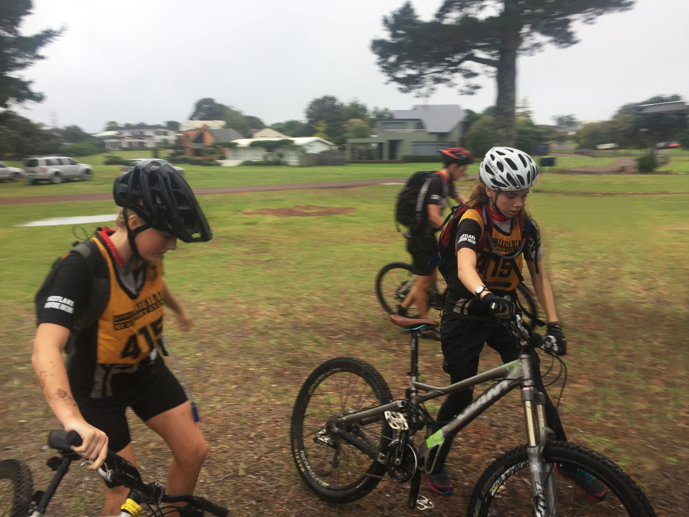
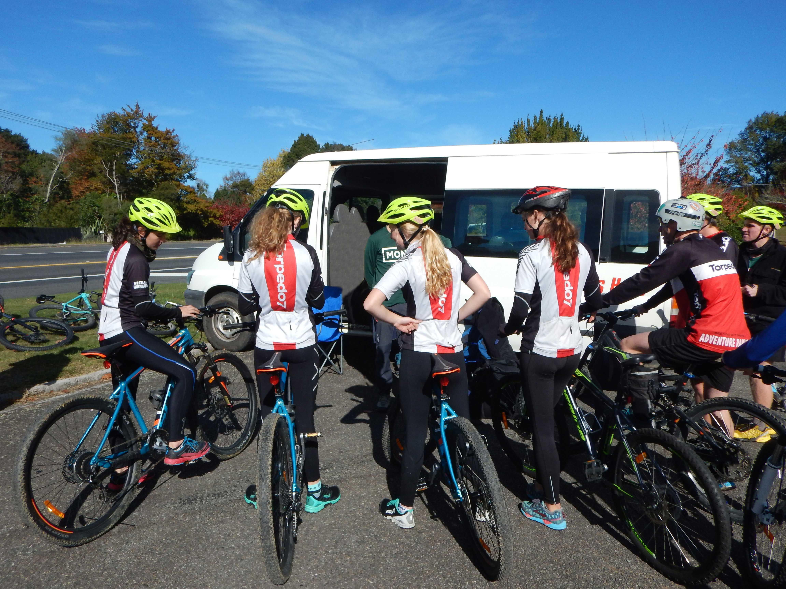

Biking in Adventure Racing
Biking is also a key component of adventure racing. If you are not running, it is likely that you will be biking.
Terrain
The terrain that you are expected to bike in consists mainly of off road, grade 3 to 4 tracks. You may ride on the grass and/or in forests, often amongst the beautiful scenery. Undeniably, biking in adventure racing also consists of hills. Many hills!
 Expectations
The main expectation of you when you bike in an adventure race is that you can pace yourself, avoiding the urge to leap off your bike at every hill. As with running, this requires fitness. Lastly and likely the most importantly, it is expected that you are confident on a bike and able to cope on challenging trails.
Tips
- Make sure your bike is in good working condition before an adventure race as the last thing you want to have to do is stop in order to work on it during the race.
- Don’t push yourself too hard on hills (put your bike into an easier gear and ‘play your own game’)
- Try to stay on your bike as much as possible